CS184/284A Fall 2026 Homework 2 Write-Up
Link to webpage: https://cal-cs184-student.github.io/hw2-nms-writeup/
Link to GitHub repository: https://github.com/cal-cs184-student/hw2-nms
Overview
In this homework, I implemented a few methods of rendering curves and surfaces in 2 and 3D. First, I implemented the Bezier curve in 2 and 3D. In 2D, I saw how repeated applications of de Casteljau's algorithm revealed a final point on the curve from a set of control points. I then saw how a 3D surface could be created out of a row of 3D curves. After defining some curves mathematically, we moved onto triangle meshes, implementing the HalfEdgeMesh data structure. Although this formalism seemed strange at first, it provided an elegant way to traverse and modify the mesh locally, which was convenient. This allowed us to compute vertex normals, enabling Phong shading. We then implemented edge flips and splits, paving the way to implement the loop subdivision mesh upsampling algorithm, which modifies meshes as it increases mesh density, smoothing sharp corners according to the density of original vertices and edges present. Implementing the mesh modification procedures was a bit of a headache, but the functions we built with them later were simple and elegant. This exercise illuminated how one might create a 3d modeling program or adaptive mesh refinement for use in simulation.Section I: Bezier Curves and Surfaces
Part 1: Bezier curves with 1D de Casteljau subdivision
In this section, we implemented de Casteljau's algorithm for evaluating a Bezier curve. De Castlejau's algorithm treats the curve as a nested sequence of linear interpolations, evaluted at a parameter value \(t\) between 0 and 1, between the control points which define the curve. First, a linear interpolation is performed between each adjacent pair of original control points to get a derivative set of control points. Then these higher order control points are interpolated again (with, again, only adjacent points being linearly interpolated), and so on until there is only one point. That point is the point on the Bezier curve associated with the parameter value \(t\). To implement it, I wrote a function which takes a vector of \(n\) control points as well as a parameter value \(t\) and returns a vector of size \(n - 1\) composed of the derivative control points of the original \(n\). Repeated applications of this function will eventually yield the single point on the Bezier curve associated with the parameter value \(t\). Below, see an example of how this algorithm looks visually for an \(n = 6\) Bezier curve.

|

|

|

|

|

|

|

|
Part 2: Bezier surfaces with separable 1D de Casteljau
To extend the algorithm to Bezier surfaces (2 dimensional surfaces in 3 dimensions), instead of defining a list of control points for the curve, we instead create a square grid of control points for the curve to interpolate between. The grid is treated as a kind of 'Bezier curve of Bezier curves', parametrized by two coordinates u and v. First, a curve is selected along the u direction by treating each row of points in the grid as a separate Bezier curve and using the 1D de Casteljau algorithm to determine the point along each of them at u. These points then form a somewhat orthogonal Bezier curve, parametrized by v. Evaluating this resulting curve at the given parameter value v gives us the selected point on the surface. If the surface is composed of \(n \times n\) points, then it requires \(n + 1\) evaluations of the 1D de Casteljau algorithm to determine a point on the surface.
To implement this expanded algorithm, I reused much of my code for the 1D algorithm in part 1 (with different typing to make it work in 3D). The new step here
was using the evaluateStep method to compute the final point on the curve. As described above, this can be done by repeatedly applying the method
to an ever-shrinking list of control points until a single point remains, the point at \(t\) on the curve. For a list of size \(n\) control points, this requires
\(n - 1\) iterations. Thus, for a surface defined by \(n \times n\) control points, we call evaluateStep \((n + 1) \times (n - 1) = n^2 - 1\) times.
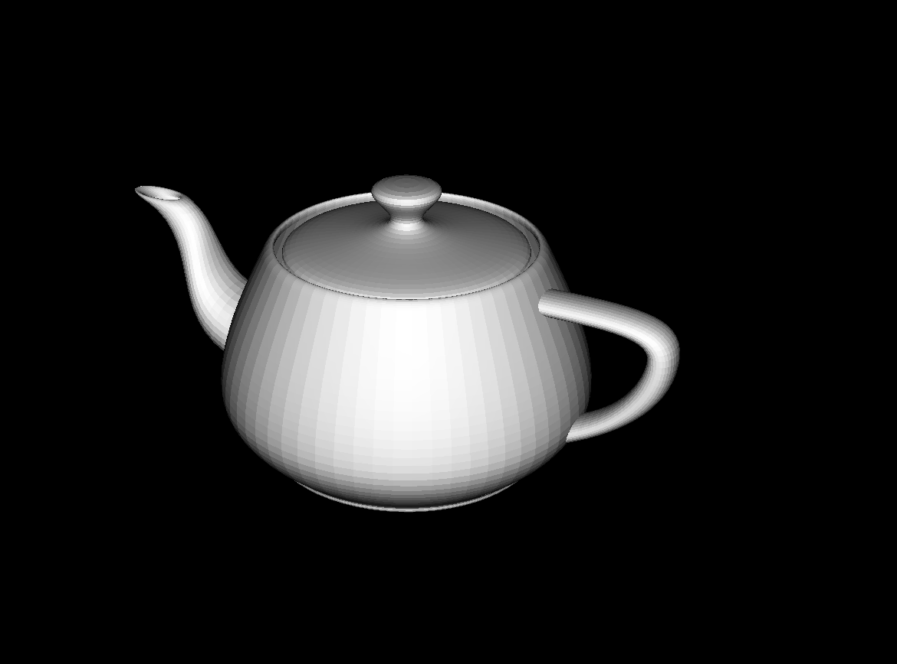
Section II: Triangle Meshes and Half-Edge Data Structure
Part 3: Area-weighted vertex normals
In this section, we implemented area-weighted vertex normals which allow for a smoother-looking shading model through Phong shading. What does it mean to have a normal at a vertex? We define the area-weighted vertex normal as the average of the unit normals of the faces which use that vertex, weighted by the area of the face. To implement this, I iterate through all the faces which use the given vertex by iterating through the half edges which leave the vertex. Since each half edge associates with only one face, this lets us iterate through the faces. For each face, I first check if it's a boundary (and if so return the 0 vector), otherwise I get the vertices which compose it by iterating around the polygon (which I assume is a triangle). For a triangle, the area is equal to half the magnitude of the cross product between the two vectors which leave a reference vertex towards the other two vertices. Conveniently, the direction of this vector is the normal to the triangle. Thus, I take half an (oriented) cross product to be the pre-area weighted normal to a given face. Normalizing the average of these weighted normals gives the area-weighted vertex normal.
Below, see an example of using these area-weighted vertex normals to implement Phong shading on a reference teapot.
|
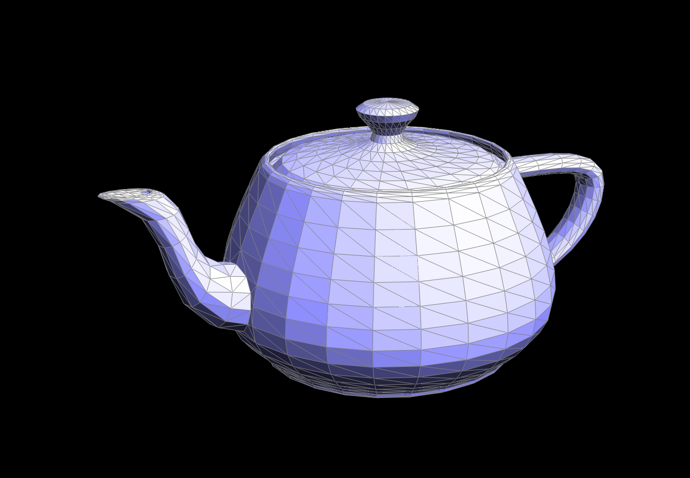 |
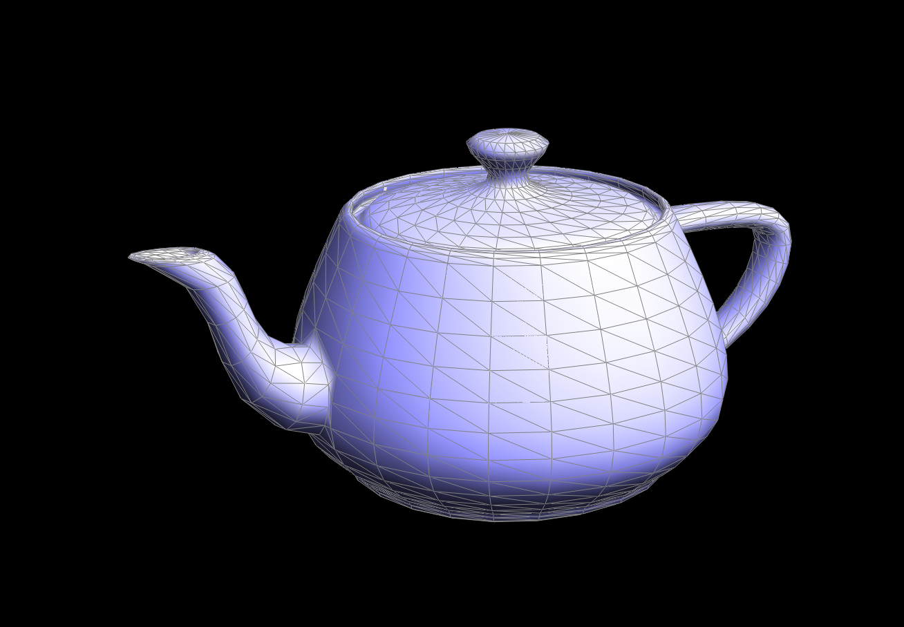 |
Part 4: Edge flip
Edge flipping is a fundamental mesh operation where we 'flip' or 'rotate' an edge which divides two triangles (together, a quad), allowing us to regularize a mesh to ensure all triangles stay as equilateral as possible. To implement this operation, we must update or double check the properties of all the half-edges which define those two triangles, as well as some of the vertices and faces. Since I don't delete/reallocate memory for the edge that I'm flipping, I can just use the same 'edge' class to represent the edge being flipped, which means that edge doesn't need any of its properties changed. Some of the parts of the mesh may not need to be updated. For example, as long as the vertex the edge is flipping *from* doesn't associate itself with a half-edge on that edge, then it's OK because the half-edge it does associate with isn't going anywhere. To be safe, I did re-assign half-edges for the two vertices being flipped from as well as the half-edges for the faces. None of the half edges on the outside of the quad need to be changed.
I braced for a debugging slog on this part, but a thorough accounting through an on-paper derivation resulted in a simple procedure, which I translated into code. I didn't encounter any bugs or errors with this section - it amazingly worked first try! Another reminder that it's best to figure out what you're going to code before you start writing anything. Pencil and paper are much better thinking tools than a mouse and keyboard. My notes are shown below.
|
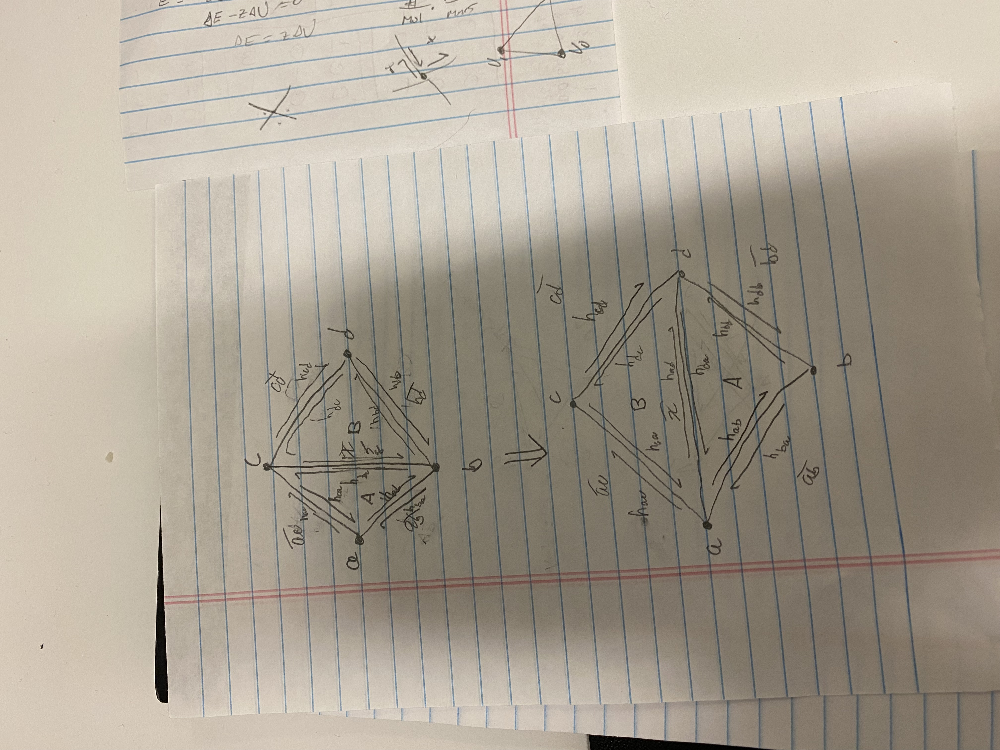 |
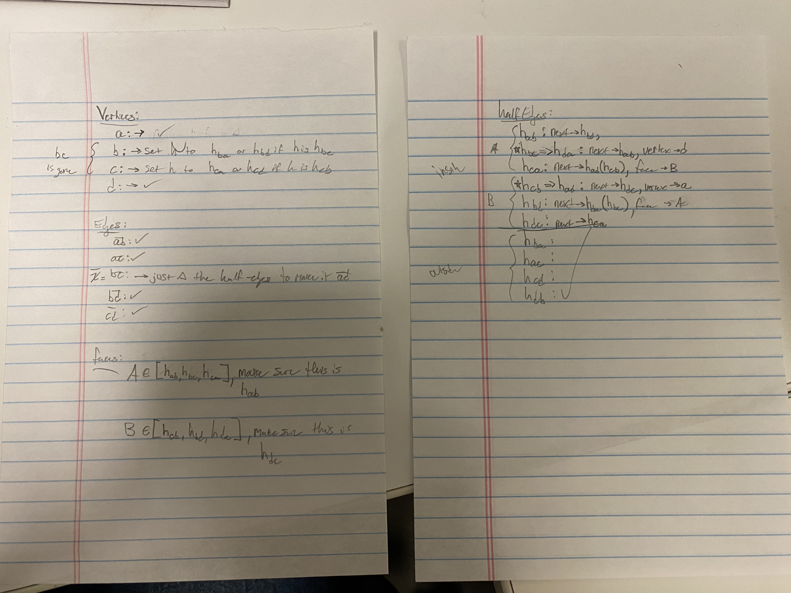 |
And here's an example of what it looks like to flip a few triangles
|
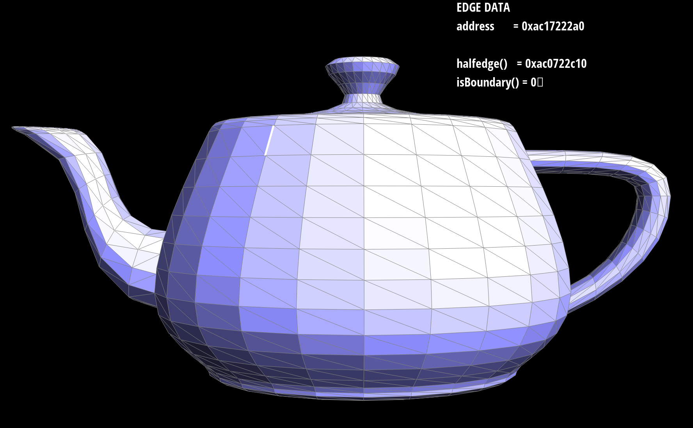 |
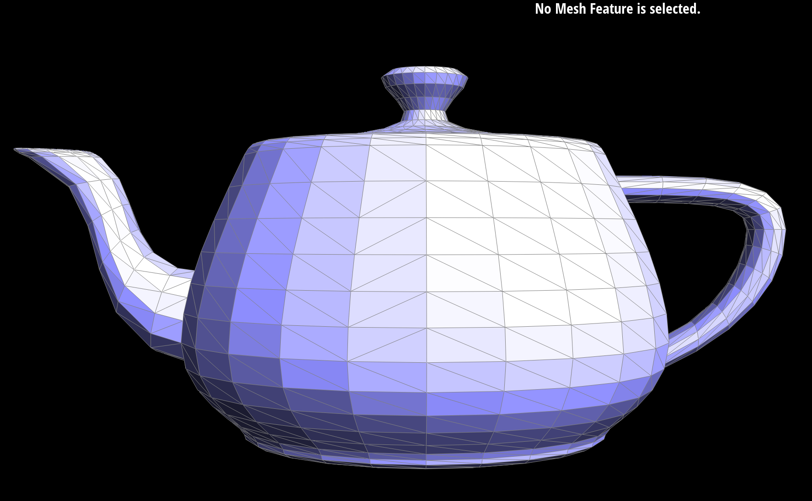 |
Part 5: Edge split
Edge splitting is another basic operation on a mesh. When an edge is split, a vertex is placed in the center of the split edge, and that vertex is connected to both vertices which originally defined the edge as well as the vertices across the faces which were adjacent to the edge. To implement edge split, I made a new vertex, two new faces, three new edges, and six new half-edges. I re-used the edge which got "split" to connect the new midpoint vertex \(m\) to one of the other vertices of the quad we're considering. Like with a flip, I had to ensure existing vertices and faces weren't associating with a half-edge that was moving. With the new mesh elements, I had to be careful to define them first and then set references, since there were new elements which referenced each other.
I had a little more trouble implementing and debugging this part of the problem, since I had to create new mesh elements
and I wasn't certain of the syntax for it. I originally put them on the back of the lists of elements, then created
an iterator with list.end() to point to them. However, when a new element was added onto the back of that
list, then that end() iterator referred to something else. Upon trying to split an edge,
the ./meshedit application window would freeze. When re-reading my function, I realized this was a
syntax with which I wasn't super familiar. A quick Gemini query about the right syntax for getting iterators to
new elements in a list sorted me out and it worked from there.
I also encountered behavior I thought was a bug, but I don't think it actually is. When splitting an element, if I then tried to flip one of the resulting edges, it would disappear. I realized, however, that when I split an edge, any two adjacent faces around the new midpoint \(m\) will form a quad where three of the vertices are collinear. In this case, flipping the edge going from the midpoint to the non-collinear vertex makes a new edge connecting the two outer collinear vertices, so it appears to disappear. Strange! Sometimes, if I was able to click on the right pixel, I could select the edge and flip it back to where it was before.
Below, I've shown some examples of splits on a mesh. Below that you can find examples of mesh elements which I've split and then flipped.
|
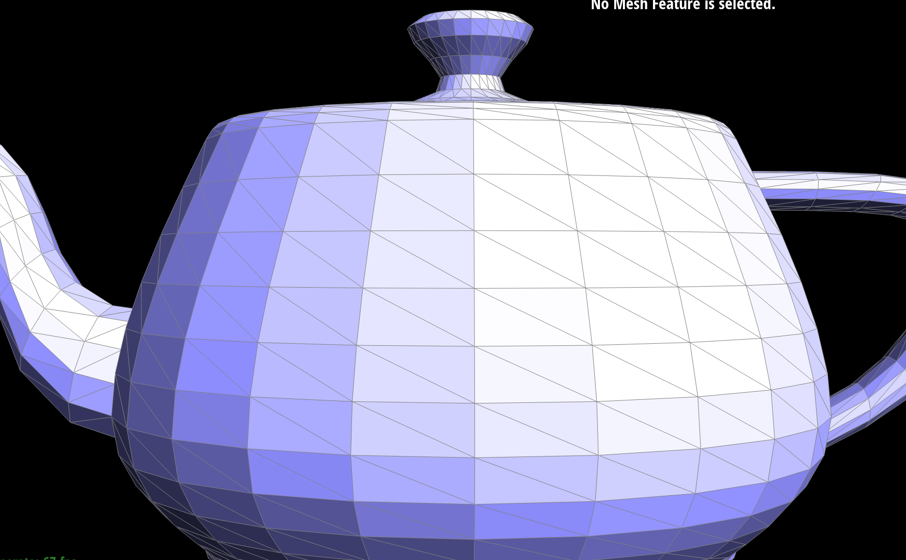 |
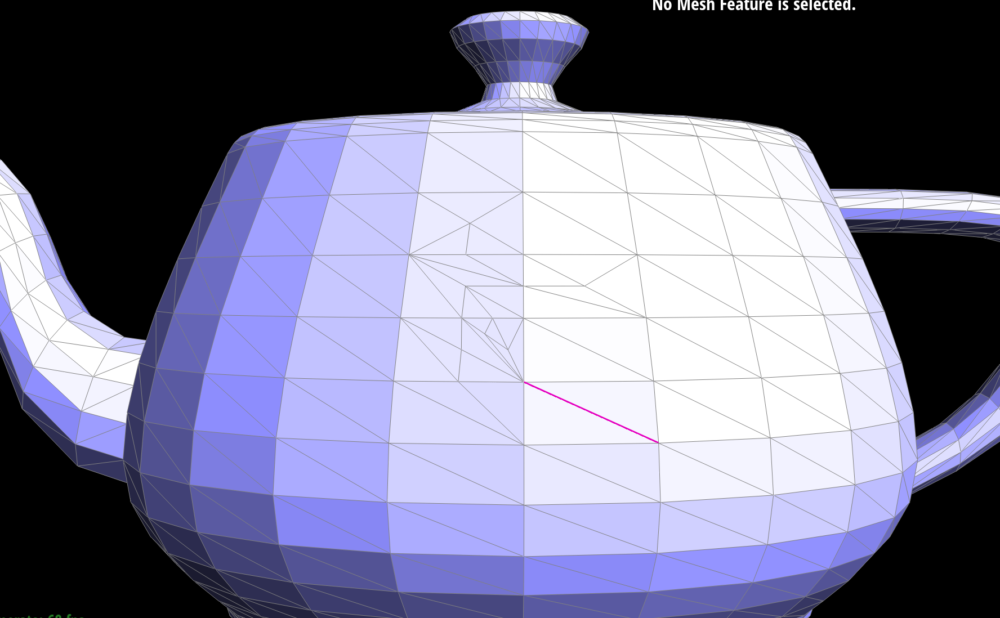 |
|
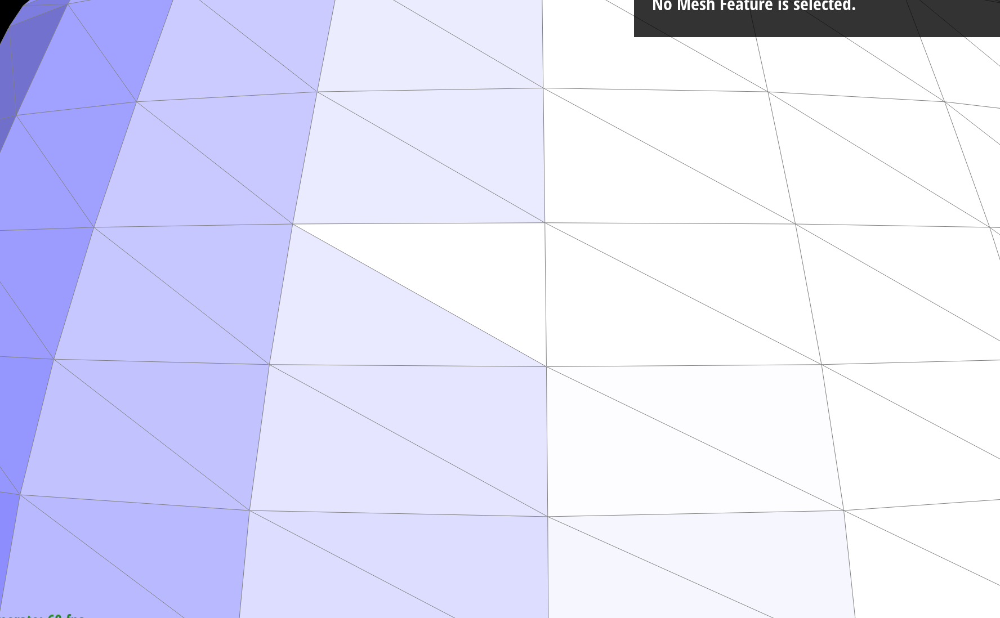 |
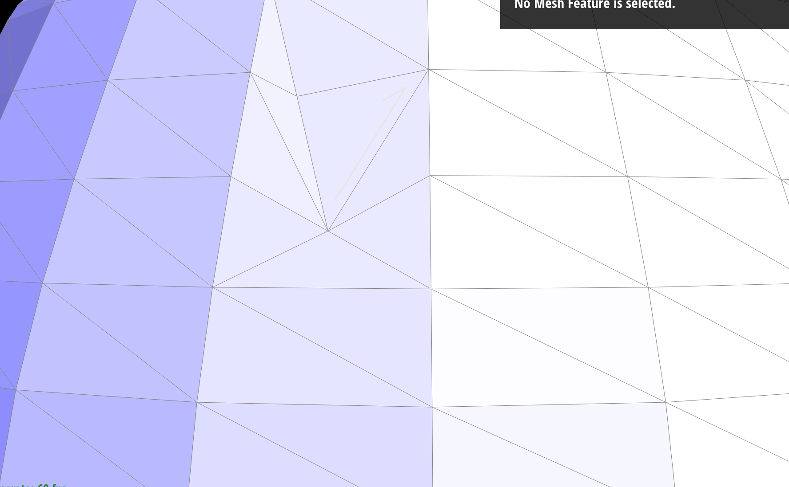 |
Part 6: Loop subdivision for mesh upsampling
Loop subdivision is a way of upsampling a mesh which "smooths" it as it upsamples. I implemented the algorithm by first
looping over all the vertices and edges, marking them as part of our old mesh, and computing their 'new positions', AKA where
they should go after running the algorithm. What does it mean to have a position for an edge? Well, edges get *split*, so their
new positions are the position of the new vertex created at their midpoint. New vertices (edge midpionts) are set according to the function
3/8 * (A + B) + 1/8 * (C + D) where A and B are the endpoints of the original edge. Old vertices are updated according to
(1 - n * u) * original_position + u * original_neighbor_position_sum where n is the degree of the original
vertex and u is a constant \(\frac{3}{16}\) if \(n = 3\), otherwise it's \(\frac{3}{8n}\). Then, I go in and split all
the old edges in the mesh (those which have old vertices on both sides of them). The new vertex positions are set accordingly.
"New Edges", those which cross pre-existing triangles, are noted here. At this point, we've subdivided all our edges, but the
topology of the mesh could be more uniform. Specifically, we haven't enforced our 4-1 subdivision rule that triangles be subdivided
by connecting edge midpoints. Some of our new edges go all the way across an old triangle. So, now, we *flip* those edges, which
are the ones which connect a new midpoint to an old vertex. We want all our new triangle-crossing edges to connect two new vertex
midpoints. Once this is done, we update the positions of all our vertices and the mesh is upsampled!
Loop subdivision really seems to smooth out existing lumpy meshes, but it never quite gets rid of pointy corners. Below, watch the transformation of a cube into a rounded object. Note how the corners of the cube still seem to 'stick out' of the new object. If I pre-split a bunch of edges near the corner of the cube, then it's not rounded as much. This makes sense, because the subdivision algorithm is weighted by a higher density of points in the original configuration (a pointy corner) than the other corners where it has fewer constraints, in a manner of speaking. I also saw that the cube became asymmetric after loop subdivision. This makes sense because some of the cube's faces have edges cutting across one way or the other. Subdividing the faces such that they were symmetric helped fix the symmetry.
|
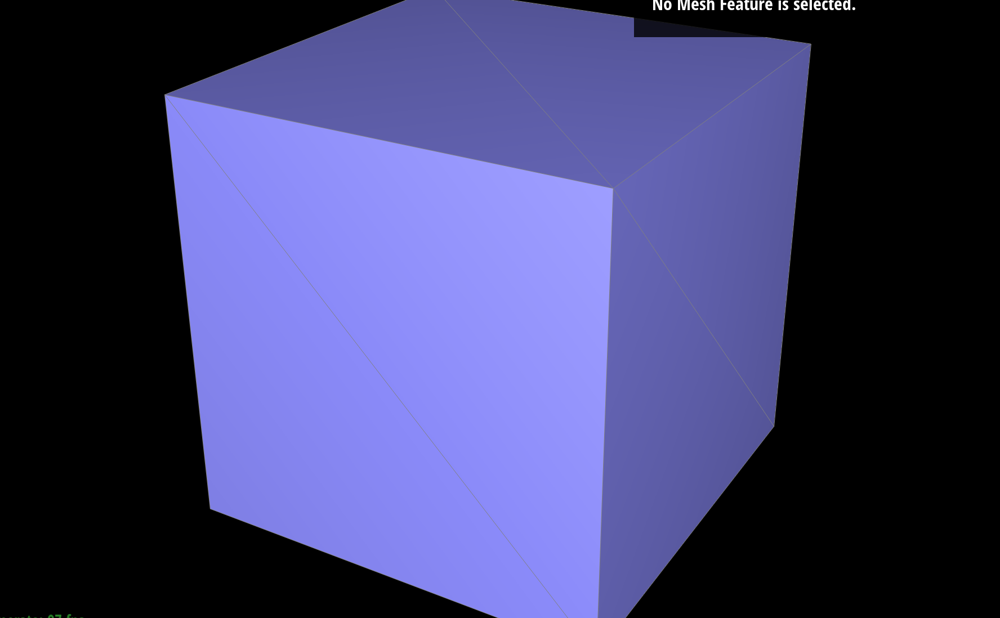 |
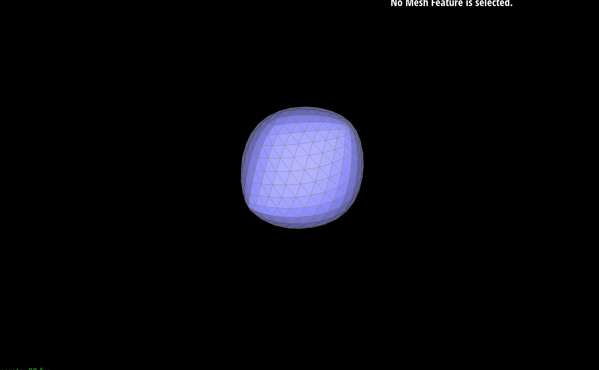 |
|
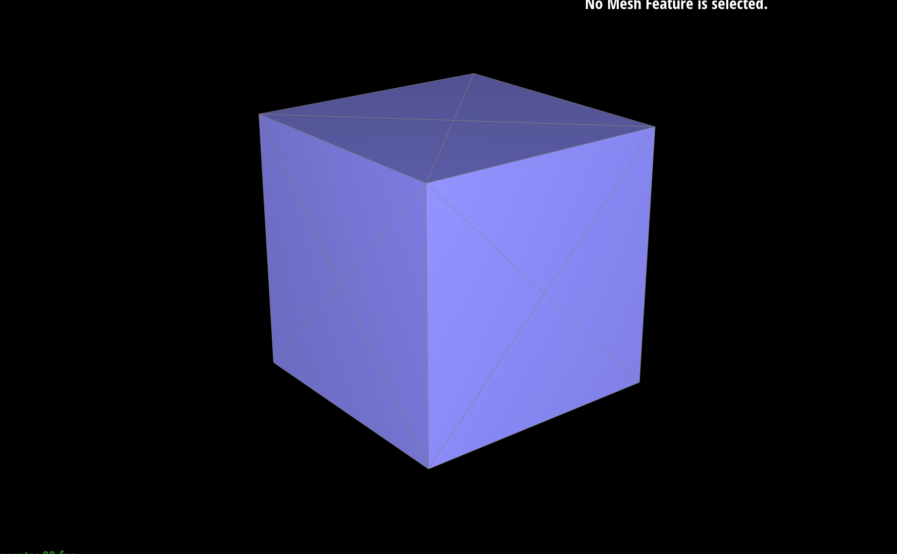 |
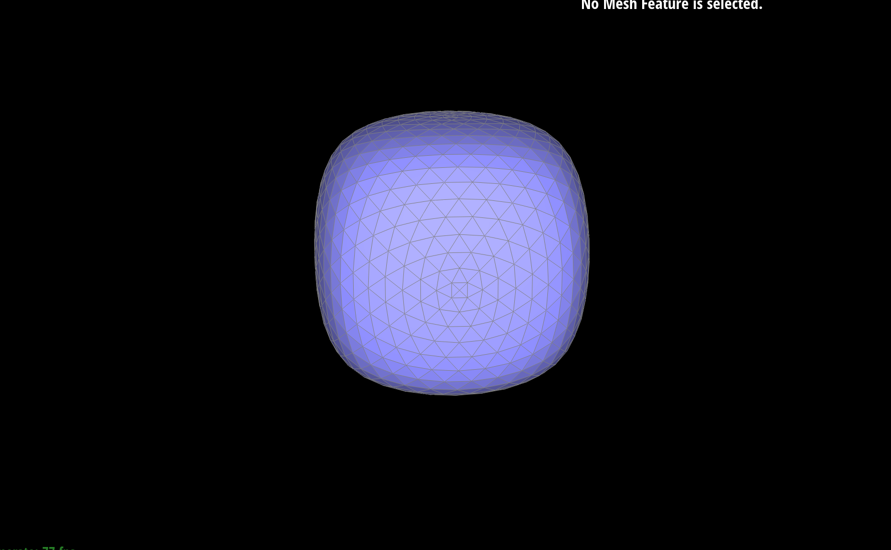 |
|
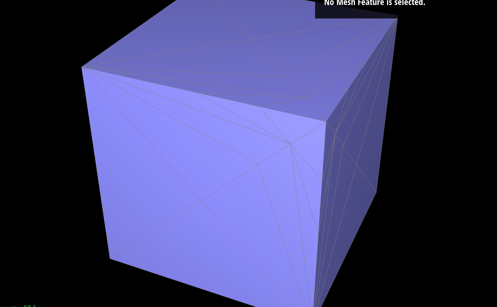 |
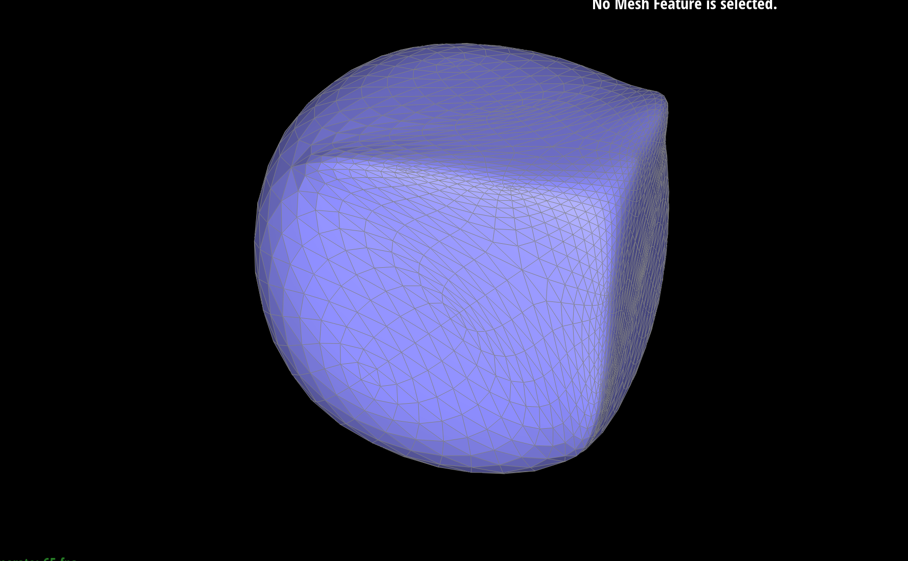 |